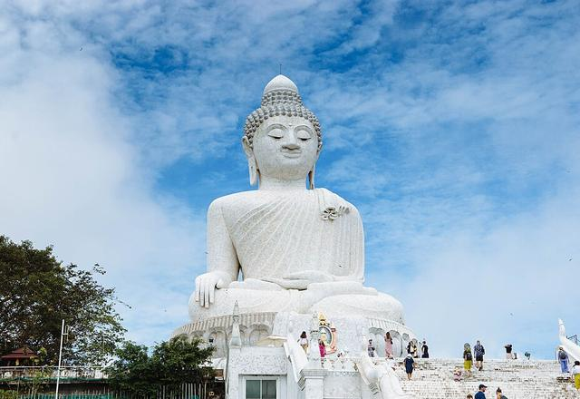
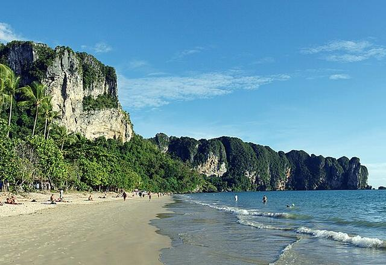
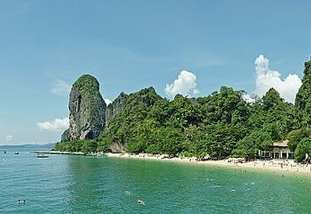
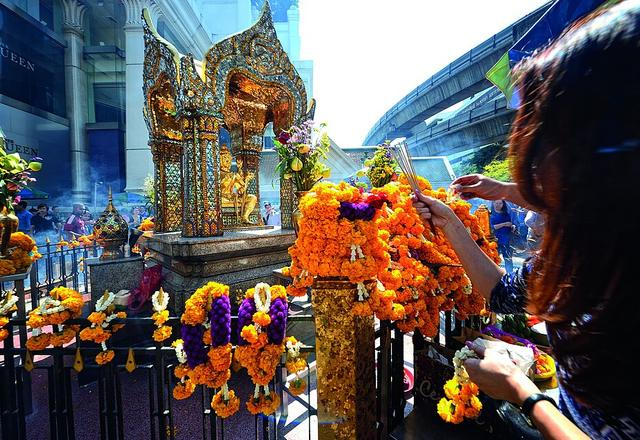
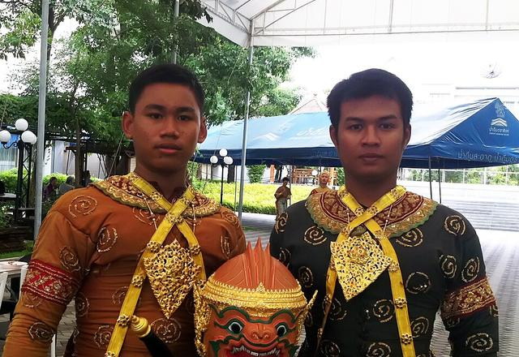
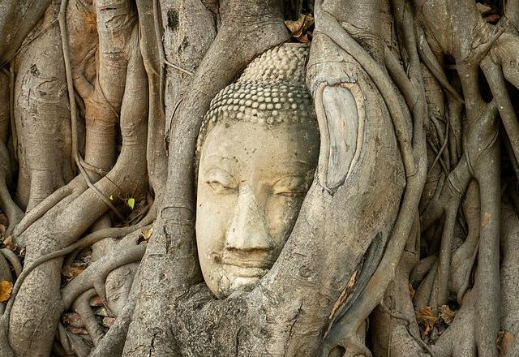
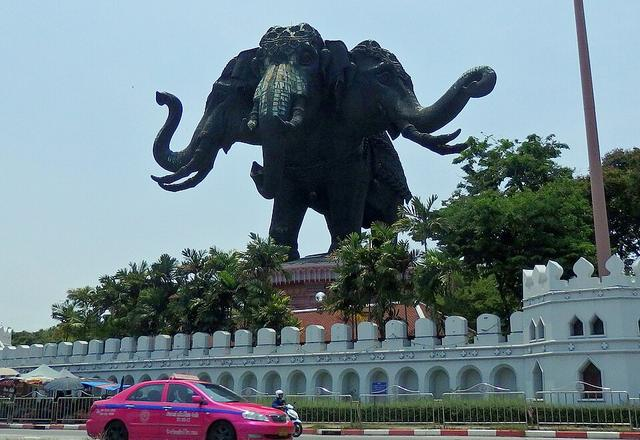
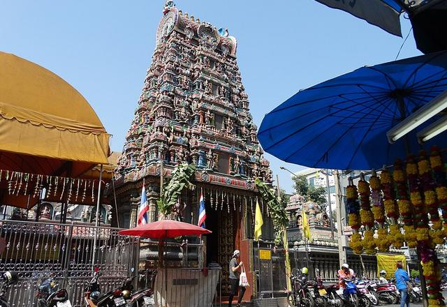

Temples, Ramayana & the Andaman Sea
A relaxed, safe, vegetarian-friendly 10-day trip for two through Phuket, Krabi, Bangkok and Ayutthaya: Buddhist temples, Thailand's Ramayana, one great beach day and a first scuba dive. Planned hour by hour with at least 8 hours of sleep every night. You get dropped at and picked up from Mumbai airport, so that leg isn't counted in the cost.
The route
All times are Thailand time (1h 30m ahead of India) unless marked IST. Flight times are examples, so adjust Day 1, 6 and 10 to your tickets. Sunset is around 6:25 pm in Phuket and Krabi, and 6:10 pm in Bangkok.
India in Thailand
You heard right. Thai culture grew from Indian roots: Theravada Buddhism came from India by way of Sri Lanka, and Hindu gods and the Ramayana shaped Thai kingship, art and language. This plan takes you to the best places to see it.
The Ramayana is Thailand's national epic
- In Thai it's the Ramakien. Rama is Phra Ram, Sita is Nang Sida, Ravana is Thotsakan, and Hanuman keeps his name.
- The king carries the title "Rama"; the current king is Rama X.
- The old capital Ayutthaya was named after Ayodhya.
- See it: Ramakien murals at the Grand Palace (Day 7), Khon dance (Day 7), Ayutthaya (Day 8).
Hindu gods, Buddhist temples
- Brahma at the Erawan Shrine and Ganesha and the Trimurti nearby (Day 6).
- Garuda is Thailand's royal emblem; Indra's elephant Airavata is "Erawan" (Day 9).
- Temple towers stand for Mount Meru: Wat Arun, Wat Chaiwatthanaram.
- "Sawasdee" comes from Sanskrit svasti; "Suvarnabhumi" means "golden land".
- Buddhist highlights: Wat Chalong, Big Buddha, Tiger Cave Temple, Emerald Buddha, Wat Pho.
Scuba diving: what it costs
Discover Scuba Diving, Phuket (Day 2)
- A beginner's try-dive: no licence needed. An instructor teaches you on the boat and stays beside you, down to about 12 m.
- Day trip to Racha Yai island with 2 dives, lunch, gear and hotel pickup.
- ≈ 3,350–6,350 THB per person, typically ≈ 4,500 THB (≈ ₹11,500). For two: ≈ ₹17,000–33,000.
- Choose a PADI 5-star dive centre and read recent reviews.
Before you book
- You fill in a medical form. Asthma, heart or ear problems, a cold, or pregnancy can rule out diving, so check with a doctor first.
- You should be comfortable in water. Expert swimming isn't required.
- No flying for 18–24 hours after diving. Your next flight is on Day 6, so you're safe.
- Buy travel insurance that covers recreational diving.
- If only one of you dives, the other can snorkel on the same boat for ≈ 1,500–2,500 THB.
Hour-by-hour plan
Every "Photos ↗" link opens more photos of that place in Google Images.
Phuket · Kata Beach
Beach, scuba, Phuket's templesDay 1 Fri 15 Jan · Fly Mumbai → Phuket
8 h sleep
Day 2 Sat 16 Jan · Scuba diving at Racha Yai island
9 h sleep
Day 3 Sun 17 Jan · Wat Chalong, Big Buddha, Old Town
8.5 h sleep


Krabi · Ao Nang
Tiger Cave Temple, RailayDay 4 Mon 18 Jan · Ferry to Ao Nang
8.5 h sleep
Day 5 Tue 19 Jan · Tiger Cave Temple and Railay Beach
9 h sleep


Bangkok · Sukhumvit
Temples, Ramayana, AyutthayaDay 6 Wed 20 Jan · Fly to Bangkok, Brahma and Ganesha shrines
8.5 h sleep
Day 7 Thu 21 Jan · Grand Palace, Ramakien and Khon dance
9 h sleep


Day 8 Fri 22 Jan · Ayutthaya, the city named after Ayodhya
9.5 h sleep


Day 9 Sat 23 Jan · Chatuchak and Erawan Museum
9 h sleep

Day 10 Sun 24 Jan · Wat Arun, fly home


Where to stay (saver picks)
Well-rated, clean, safe 3–4 star hotels in good locations. Book rates with breakfast included and free cancellation. Prices are rough January estimates per night. Check current rates on Agoda or Booking.
Sugar Marina Resort – Art, Kata
≈ ₹4–5k / nightGood value, a short walk to Kata Beach and restaurants. Dive shops pick up here.
+ ₹1.5–2k a night: Chanalai Romantica (adults only, veg breakfast).
BlueSotel SMART Krabi Aonang
≈ ₹3.5–5k / nightAdults only, close to Ao Nang's beach, longtail boats and Indian restaurants.
+ ₹3–4k a night: Avani Ao Nang Cliff (rooftop pool).
Holiday Inn Express Sukhumvit 11
≈ ₹4.5–5.5k / nightBreakfast included. On the street with the most Indian veg restaurants, near Nana Skytrain station.
+ ₹2–3k a night: Aloft Sukhumvit 11 (same street, rooftop pool).
Budget for two
| Item | Notes | Cost |
|---|---|---|
| Flights: Mumbai → Phuket, Bangkok → Mumbai | Book this month; compare the Bangkok option in the checklist | ₹50,000 |
| Flight: Krabi → Bangkok | AirAsia or Thai Lion | ₹5,000 |
| Hotels, 9 nights with breakfast | Phuket 3 · Krabi 2 · Bangkok 4 | ₹42,000 |
| Temples, shows & boats | Grand Palace with Khon, Wat Pho, Wat Arun, Ayutthaya, Erawan Museum, Railay longtail | ₹10,000 |
| Ayutthaya car and driver | Full day; the train is cheaper | ₹8,500 |
| Ferry & local transport | Grab, Skytrain, ferry, airport rides | ₹20,000 |
| Vegetarian lunch & dinner | ≈ 900 THB a day for two | ₹23,000 |
| Insurance (with diving cover), one eSIM, tips | ₹6,000 | |
| Trip without scuba | ≈ ₹1.65 L | |
| Discover Scuba for two | ≈ 4,500 THB per person; range ₹17–33k | + ₹23,000 |
| Trip with scuba | ≈ ₹1.88 L |
Shopping isn't included. Rates use roughly ₹2.6 per Thai baht. Compared with the beach-heavy version (≈ ₹1.6 L), Bangkok gets an extra night and the plan adds Ayutthaya, the Khon show and the Erawan Museum. Dropping the Phi Phi tour saves some of that.
Ways to bring it down
- Only one of you dives, the other snorkels: saves ≈ ₹6,000–10,000.
- Pick a cheaper dive operator (≈ 3,350 THB per person): saves up to ≈ ₹6,000.
- Go to Ayutthaya by train and hire a tuk-tuk there: saves ≈ ₹4,000–5,000.
- Fly Mumbai ⇄ Bangkok return plus a cheap flight to Phuket: often ₹5–10k less.
- With all of these, the trip with scuba comes to about ₹1.6–1.65 lakh.
Places you'll see
More photos of each place: use the "Photos ↗" links in the day plan.


Vegetarian food guide
Say this
- Gin jay กินเจ: I eat "jay" (vegan: no meat, egg or fish sauce, often no onion or garlic)
- Mai sai nuea sat ไม่ใส่เนื้อสัตว์: no meat
- Mai sai nam pla ไม่ใส่น้ำปลา: no fish sauce
- Mai sai khai ไม่ใส่ไข่: no egg
- Mai phet ไม่เผ็ด: not spicy
Look for yellow flags with red Thai letters (เจ). They mark vegan "jay" food stalls.
Safe orders
- Pad pak ruam: stir-fried mixed vegetables
- Pineapple or vegetable fried rice (say no egg if needed)
- Pad Thai jay: tofu, no fish sauce, no egg
- Mango sticky rice, coconut ice cream, fresh fruit
Apps: HappyCow (veg restaurants near you), Google Translate with Thai downloaded for offline use, Grab (taxis and food delivery).
Money
US dollar account
- Thai money changers such as SuperRich and Vasu give very good rates for USD cash. Bring clean, undamaged $100 or $50 notes.
- A US debit card works well at ATMs if your bank charges no foreign transaction fee. Thai ATMs charge ≈ 220 THB per withdrawal, so take out larger amounts less often.
INR side
- A forex card or a zero-markup credit card works for hotels and malls. Normal Indian cards add about 3.5% plus GST on foreign payments.
- Book flights and hotels directly. A package tour bought from an Indian agent may attract TCS (tax collected at source) upfront.
This is general travel-money information, not financial advice.
Booking checklist
Ticks are saved in this browser only.
Now · by 30 Nov 2026
By 15 Dec 2026
Early January 2027
12–14 Jan 2027
Packing & safety
Pack
- Light cotton clothes, swimwear, a cover-up
- One modest outfit each for temples (shoulders and knees covered)
- Reef-safe sunscreen, sunglasses, a hat
- Waterproof phone pouch, flip-flops, a light dry bag
- Thai sockets take Indian two-pin plugs; a universal adapter is safer
- Basic medicines (motion sickness tablets for boats)
Stay safe
- Use Grab or Bolt instead of street tuk-tuks.
- Don't rent scooters without an International Driving Permit. Insurance won't cover accidents.
- Skip jet-ski rentals, which are a common damage scam.
- Swim only where there are flags and lifeguards.
- Keep passports in the hotel safe and carry copies.
| Emergency | Number |
|---|---|
| Tourist Police (speaks English) | 1155 |
| Ambulance | 1669 |
| Embassy of India, Bangkok | +66 2 258 0300 |
Photo credits
Photos from Wikimedia Commons, cropped and resized. Licences: CC BY, CC BY-SA or public domain.
Ao Nang Beach: Ao Nang beach panorama 3.jpg by kallerna, CC BY-SA 3.0
Big Buddha: The Big Buddha, Phuket.jpg by Subhrajyoti07, CC BY-SA 4.0
Chatuchak Market: Chatuchak Weekend Market 2.jpg by Christophe95, CC BY-SA 4.0
Discover Scuba: Thailand 2016 (413 of 422) (31551938413).jpg by Weldon Kennedy from London, UK, CC BY 2.0
Erawan Museum: Samut Prakan, Mueang Samut Prakan District, Samut Prakan, Thailand - panoramio.jpg by mohigan, CC BY-SA 3.0
Erawan Shrine (Brahma): Bangkok ErawanShrine2.jpg by Mr.Peerapong Prasutr, CC BY-SA 4.0
Grand Palace: Wat Phra Kaew by Ninara TSP edit crop.jpg by Original image: Ninara from Helsinki, Finland. Edit: TSP, CC BY 4.0
Kata Beach: Phuket - Kata Beach 001.jpg by ADwarf, Public domain
Khon masked dance: Actor Twin Monkey The Masked Play.jpg by Saerin, CC BY-SA 3.0
Phra Nang Cave Beach: Phra Nang beach 28.jpg by kallerna, CC BY-SA 3.0
Phuket Old Town: Thalang Road, Old Phuket Town.jpg by Christophe95, CC BY-SA 4.0
Railay Beach: Railay Beach 5.jpg by kallerna, CC BY-SA 3.0
Ramakien murals: Lascar Detail of one of the Ramakien murals - Wat Phra Kaew (4509758126).jpg by Jorge Láscar from Australia, CC BY 2.0
Samudra Manthan, BKK airport: Churn milk ocean suvarnabhumi.jpg by Kurun (talk), CC BY-SA 3.0
Sri Maha Mariamman: Street Scene at Sri Maha Mariamman.jpg by Adam Jones, CC BY-SA 2.0
Tiger Cave Temple: Wat Tham Suea SF0001.jpg by Stefan Fussan, CC BY-SA 4.0
Top banner: Phi Phi Island Long Boats by Don Ramey Logan.jpg by Don Ramey Logan, CC BY 3.0
Wat Arun: Templo Wat Arun, Bangkok, Tailandia, 2013-08-22, DD 37.jpg by Diego Delso, CC BY-SA 3.0
Wat Chaiwatthanaram: Wat Chai Watthanaram - Ayutthaya.jpg by JJ Harrison (https://www.jjharrison.com.au/), CC BY-SA 3.0
Wat Chalong: Phuket Thailand Wat-Chalong-01.jpg by CEphoto, Uwe Aranas, CC BY-SA 4.0
Wat Mahathat, Ayutthaya: 02d Wat Mahathat (NgnL)-08468.jpg by No(0)GoodNamesLeft, CC BY-SA 4.0
Wat Pho: Wat Pho, Bangkok, Tailandia, 2013-08-22, DD 06.jpg by Diego Delso, CC BY-SA 3.0
Wat Phra Si Sanphet: Three Chedi(s) of Wat Phra Si Sanphet.jpg by This Photo was taken by Supanut Arunoprayote. Feel free to use any of, CC BY 4.0